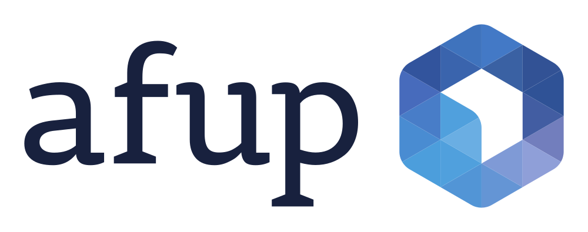

Meetup AFUP / Web Front
"Les CSS envoûtées par la magie d'Houdini"
Dessin et animations nouvelle génération, et plus encore

Nos hôtes

... votre speaker
... et vous !
Toi, public
Qui fait du front/UI/animation/print/vidéo ?
Ratio natif iOS/Android/Win (hors WebViews) & web pur ?
Exemples de dernières demandes clientes ou créas complexes ?
CSS, je t'üíñ moi non plus
C'est assez vrai. floats, !important, z-index, negative margins, positions, (r)em/px ...
Des libertés laissées aux fabricants de navigateurs, specs trop souples = doutes = bugs ou mues (cf -ms-grid)
Travaux des groupes W3C (Open Web) et WhatWG (fabricants) séparés jusqu'en... Mai 2019
C'est le passé. Ca va -globalement- beaucoup mieux, malgré quelques tensions entre Moz et Google, liées privacy
Membres clef du CSSWG @twitter, YT : Rachel Andrew (Smashing), Lea Verou (MIT), Tab Atkins (Google), Jen Simmons (Moz)
✨ CSS Houdini ✨
ouvre davantage le moteur CSS via JS
on a un accès au plus proche de l'interne du moteur
on peut y créer nos propriétés, peinture/clip, animation, layout personnels : on étend le moteur
pour nos propres effets graphiques
travail commencé fin 2015
pour les devs, pour les créas
suite du travail après WebComponents, WebWorkers ... et Web Animations API
ü§î ... Une solution √† la recherche d'un probl√®me ? ü§î
C'est un accès "boite à outils créa" sur le moteur CSS. OK ...
" Like 10000 spoons when all you need is a knife ". Ironic don't you think ?
Ca te donne de quoi construire ton couteau si tu n'en avais pas
Si tu en avais, ça te permet de le polir, l'améliorer, ou faire une alternative, variation... en faire un pinceau à poils doux au lieu de dents, prototyper une idée
With great power...
Houdini = Extension du moteur CSS, outillage sans limites ou presque* : c'est pas open bar total, mais tu peux faire ton propre cocktail
.vesper {
--gin:6; --vodka:1.5; --lillet:0.75; --lemon:1;
background:paint(shaken) !important; /* not stirred */
display:layout(martiniglass);
}
Qui te donne - ou pas - le couteau ?
Les fabricants de navigateurs, et de librairies - toi compris !
Houdini, la reine des neiges dans ton navigateur ❄️
Libéré(e), délivré(e) de limites du moteur, des librairies tierces. Tu n'attends plus ta fonction CSS : tu peux l'écrire, la partager dans un cadre standard Web, étendre une fonction existante du moteur
... ça t'empêche pas de commit sur OSS si tu sais/peux/veux le faire, ou trouver des compromis créas (ex: chifoumi, alcool)
On cite un hit musical, une princesse Disney, une arme blanche, de l'OSS, 2 des GAFA. Joyeux bordel Tarantinesque. Tout va bienButs et acteurs
Ouvrir les portes de la "magie" CSS et pouvoir étendre le moteur sans attendre les fabricants ou ticket les librairies tierces
Diminuer l'interaction JS à base de addClass/el.style ou les hacks type translate3D(0,0,0) et manipulations de DOM et CSSOM douteusesSéparer la logique dessin/animation/layout (JS) et son style (CSS)
Faciliter du rendu à 60fps fluide hors thread principale
Task force Google, Mozilla, Apple. Réelle volonté, par et pour des devs/UI
hacks JS = parce qu'on n'a pas parfois le choix. Coucou Samsung, certains iOSLe DFO et son navigateur web
QCM : où est ton client, ton/ta créa UI UX, ton navigateur, ton budget, ta deadline, ton/ta collègue super doué(e) qui t'aide en front, jQuery, ton DOM, ta CSS ... toi ?
Dans une maquette, 70% est "facile" - relatif à l'expérience de chacun(e). Hors WebGL, autre domaine
C'est quand le moteur ne te donne pas les autres 30% que la recherche commence (toi, tes collègues, google, stackoverflow, ...)
Houdini = moins de galères, moins de "on peut pas le faire en CSS / pur web" : tu étends pour ton besoin le moteur
Houdini + Flex/Grid + BEM/SASS/LeSS = üåà
nb : ce n'est pas un remplaçant à WebGL. C'est WebGPU qui remplacera WebGL
Houdini peu difficile, ni obscur. On a 5 nouvelles possibilités sur des bases CSS / Dessin / Animation
"CSS vertical align" sur Google : Environ 10 600 000 résultatsDivision en 5 nouvelles grandes APIs correspondantes à 5 besoins
https://github.com/w3c/css-houdini-drafts (repo des specs)
https://drafts.css-houdini.org (specs)
- CSSOM API (CAPI) : nouveaux objets CSS
- Properties/Values API (PVAPI) : properties typées métier
- Paint API (PAPI) : dessin perso
- Worklet Animation API (WAPI ...sur WAAPI) : animations on drugs
- Layout API (LAPI) : layout perso
- ... 6e optionnelle, Font Metrics API (FMAPI) *
Oui, mais le support ?
https://www.chromestatus.com/features#houdini
- CSSOM : livré Chrome, ii FF, in dev SF
- Properties Values API : in dev 90% Chrome/SF, in dev FF
- Paint API : livré Chrome, ii FF, in dev SF
- Worklet Animation API : in dev 80% Chrome, uc SF
- Layout API : in dev 70% Chrome, uc FF/SF
- Font Metrics API : rien, uniquement les specs
Important : WAAPI à 100% dans Safari / iOS13 et FF Nightly, à 80% Chromium (playback .pause(),.reverse() pas fini)
Chromium (Blink) et Safari (WebKit) devant
Firefox (Servo) derrière, IE va utiliser Blink
La Team IE Edge va verser le meilleur de Edge dans Blink (Reddit aMa 06/19), réouvrir des API bloquées contre adblockers
"We're still evaluating some of the latest changes here in Chromium(...). To be clear, we will not artificially restrict ad blocking for business reasons related to advertising."
Finally, we occasionally hear requests for a built in ad blocking experiences in Edge. For most users, we find that extensions (combined with strong defaults around tracking prevention) are the best option (...) but we absolutely want to hear from you if you think this should be built in.
Les 5 API ne sont pas -encore- disponibles partout
donc : CSS @supports(xxx){....} + JS if('xxx' in CSS)
ça fait quelques années que les prefix -webkit -moz -ms ont été abandonnés pour toute nouvelle fonction
à la place, flags explicites à cocher sous 'Experimental features'
... et Progressive Enhancement, toujours penser fallback
Que Firefox soit en "retard" n'est pas une mauvaise chose
Dû au switch de Gecko vers Servo à partir de 2017, 2 moteurs
On veut de la diversité dans les moteurs de rendu, Servo est top
Pas de One Chrome to rule them all... Apple interdit autre moteur que WebKit
FF Worklet a bougé < 1 mois : https://bugzilla.mozilla.org/show_bug.cgi?id=1315239 en Q3 2019 tout Houdini marqué en Enhancement Prio 3, les tickets dataient de 2017, la Worklet est un pilier des APILes nouvelles API au menu
Nouveaux objets CSS et propriétés perso typées
Nouveaux objets JS Worklets pour :
Dessin, peinture, animation, layout
... fontes en dessert/café (très léger)
CSSOM API
Fini la concaténation et les typos, et enfin le try/catch
Nouveaux objets CSS* et .attributesStyleMap/.computedStyleMap
el.attributeStyleMap.set('opacity', CSS.number(0.3));
el.attributeStyleMap.has('opacity');
el.computedStyleMap().get('opacity').value
// ex getComputedStyle(el).xxx
el.attributeStyleMap.delete('opacity')
el.attributeStyleMap.clear();
CSS.vw(100); CSS.px(42); CSS.angle(90deg);
CSS.percent(10); CSS.ms(300);
new CSSTranslate(CSS.px(10), CSS.px(10))
// translate(10px, 10px)
new CSSStyleValue.parse('transform', 'translte3d(...)');
// typo throw
Ce nouvel objet CSS
est la pierre fondatrice d'Houdini
CSS.registerProperty(...);
CSS.paintWorklet.addModule(...);
CSS.animationWorklet.addModule(...);
CSS.layoutWorklet.addModule(...);
et les Worklets ses assistant(e)s
... une AudioWorklet est dans Firefox et Chrome - hors Houdini
Pour toutes les démos qui vont suivre
Activation des flags beta Web/CSS requise
Chrome Canary --enable-blink-features=GroupEffect
Safari Technology Preview
üîë Properties/Values API üîë
Enfin (!) du typage dans des variables CSS perso
... on rappelle BEM/SASS/Less pour une structure de classes maintenable11 types supportés : length, number, %, color, image, url(), integer, angle, time, dpi, transform
CSS.registerProperty({
name: '--sky', /* stp change un peu le ciel du header ? */
syntax: '<color>', /* son type pour JS (objet Color rgba) */
inherits: true, /* propagée vers le bas dans le DOM tree */
initialValue: 'vanilla', /* son default */
});üé® Paint API üé®
Dessin libre avec background:paint('perso');
CSS.paintWorklet.addModule('stars.js');
Introduction de PaintWorklet : analogie avec les Workers JS
Une Worklet est un JS de dessin dormant, en tâche de fond
But : qu'elle ne tourne pas dans la main thread (main JS sur main sans rAf = ça rame) mais dans une autre thread
La Paint API te donne un Canvas sans accès au DOM
donc oui le 31/10 tu peux faire background:paint(üéÉ);Dessin dormant ?
La Worklet est dormante et se réveille quand :
Une des propriétés CSS mappées change (ex:sky,ranking)
La géométrie de l'élément peint change (ex:resize... responsive)
La timeline bouge (ex:scroll, demo plus loin)
Une Worklet réveillée va dessiner à chaque frame, donc 60 fois/seconde : ton budget fluide est de 16ms
C'est un WebWorker en plus léger, câblé directement sur le moteur CSS. Proche d'un layer Photoshop, effect Premiere, After Effect
Sécurité
- Aucun accès au DOM et les Properties sont readonly. Le Canvas est étanche. Si besoin de DOM, faire un Canvas classique sans Paint API
- Car tu n'as pas spécialement envie qu'un Canvas chargé depuis JS/CSS externe puisse lire repeindre ou masquer des éléments de ta page
- exemple : redessiner champ input de saisie de CB avec un message pour contacter la "banque" avec n° surtaxé
- c'est un PaintRenderingContext2D subset de CanvasRenderingContext2D : un Canvas restreint, uniquement dédié √† du dessin
11 Types trop simples ? Comment passer des complexes ?
exemple : un flux audio/vidéo/ECU (data automobile)... = faire de la DataViz depuis une source riche, à 60fps
solution (Juin 2019) : ajouter un type <blob>
https://github.com/w3c/css-houdini-drafts/issues/872
... tu peux déjà passer une property arbitraire non typée façon
--madata:'{foo:1,bar:2}';
/* c'est moche, mais tu peux...
en attendant postMessage (spoiler) */
Skins : background:paint('488GT3'); background:paint('motec');
/* nos Properties CSS custom (ici, number)*/
--gear: 3; /* si pas set: initialValue, Motec 0 */
--speed: 81;
--pos: 16;
--laptime: 7.28;
--rpm: 6000;
/* jauge rectangle en Ferrari, arc rectangles en Motec */
background-image:paint('compteur')
/* Worklet compteur.js : ta logique et plus ton style */
C'était un peu normé cette peinture
... on va mettre un peu d'animation
üé¨ Worklet Animation API üé¨
Animations non blocking à 60fps relatives à une timeline libre ... c'est assez fait pour le scroll, et ça le fait - très très - bien
qui a déjà fait des parallaxes fluides ? des offsets / staggering ? Material/anime.JS ?CSS.animationWorklet.addModule('anim.js')
Un Animator de KeyFrameEffects sur une timeline
Note : séquence/chorégraphie à faire à la main. Un peu ballot, car GroupEffect dans la spec - mais caché par un flag pour le moment
Encore une API d'animation ? Déjà 3
... on a déjà CSS transitions, CSS animations (@keyframes), Web Animations API (el.animate({...}).pause())NON. La Worklet est une extension de WAAPI qui donne au KeyframeEffect, une timeline libre (dont une ScrollTimeline) et un état optionel (stateful)
ex: se souvenir de l'état pour le modifier/partager dans le temps, ou quand le moteur bouge la Worklet entre threads (kill and revive)
ex: accélérer/distordre le temps (document.timeline relative)
Pourquoi on a toujours du paint flashing ? - sur certains éléments
Parce que j'ai modifié leur géométrie ou box shadow
Et ce sont des classiques qui déclenchent un repaint
Mais la Worklet n'est pas sur la Main thread : no UI jank si son JS rame, au pire c'est elle qui rame, pas toute l'interface
fini les hacks risqu√©s translate3d(0,0,0), la Worklet promeut l'√©l√©ment en Layer vers le Compositor‚öôÔ∏èÔ∏è Main thread, Layer, Compositor ? üñåÔ∏è
Main thread : là où la UI vit (impactée par réseau, manips lourdes de DOM, CSS, JS lent, etc...)
Layer : un navigateur range par calques, pour optimiser. cf Photoshop
Compositor : le dernier élément de la chaîne de rendu d'un navigateur, qui traite les pixels des calques (opacity, transform)
Chargement page + ressources -> construction des arbres DOM, CSSOM -> Layout x/y -> mise en Layers -> Peinture + Compositing -> envoi des pixels vers la carte graphique
spoiler : talk à venir sur comment fonctionne un moteur de rendu
La Worklet n'est PAS sur la Compositor thread, elle s'y defer
Car si tu fais du bitcoin.js dans la Worklet, ça ralentirait le Compositing : seuls les KeyframeEffects l'intéressent
Elle va au minimum chercher à performer comme requestAnimationFrame : à 60fps, et bénéficie des optims du Compositor (ex: cache de frames, interpolation)
Si ton animate est trop souvent > 16ms (1/60), le moteur peut t'offthread (kill and revive) ou throttle : un 30fps fluide est meilleur qu'un 60fps qui drop
60fps est une limite basse, l'iPad Pro est à 120Hz, l'Oculus/Vive à 90Hz. Chrome, IE et FF peuvent faire du 240Hz/480Hz sur des moniteurs usine. Apple discute de dalle 120Hz avec LG/Samsung pour iPhone 2020Safari a une option pour 60fps et limite toutes les iframes sans interaction à 30fps, pour la batterie : un site web Vsync à 120fps c'est beau mais chaud.
Jouer avec le temps, animer des éléments corrélés

Flash et ses timelines
no bashing, circa 2006 HTML/CSS ne valait rien pour une UI riche
double budget pour faire un site pour IE et Netscape Navigator
le Web est né au CERN, pas dans une école d'art
⌛ Le temps peut être basé sur une unité libre ⌛
On a vu le scroll, touch démo : le temps basé sur le deltaX d'un CSS Pointer Event (... ton doigt/stylo)
Le temps sur le bout de ton doigt. Si tu donnes NaN ou infinite... essaie ;)
Adobe & AirBnb
Librairie pour Android/iOS/React Native... et web pur
Importe les animations depuis Adobe After Effects
La version web n'était pas très performante, son moteur a été porté sous Worklet
Parfois on veut ranger des Effects ensemble
Pour le moment (Août), GroupEffect, groupe de KeyFrameEffects est caché (flag, ya plus de -prefix)
exemple : démarrer l'effet B quand le A est à 50%, démarrer B, C, D en même temps mais avec des offsets (= delay/parallaxe/stagger), pause() ou play() les effets en bloc
Travail important de Yi Gu sur la Chorégraphie, Parallel, Séquence et Stagger (échelon) pour améliorer la spec

les travaux de Yi sur https://github.com/yi-gu/group_effect
propose nouveaux types SequenceEffect, ParallelEffect, StaggerEffect en plus du GroupEffect
Q1 2020. Yi est joignable et demandeur de retours
Question √† Julian Garnier (anime.js) https://github.com/juliangarnier/anime/issues/602üñºÔ∏è Layout API üñºÔ∏è
On a déjà flex, column, grid...
OUI. Et Bootstrap aussi
et subgrid va arriver pour hériter des "rails" de grid (il est déjà dans FF Nightly)
PVAPI, PAPI et WAPI ouvrent propriétés, dessin et animation... quid de la mise en page ?
Rappel : c'est Bloomberg qui a sponsorisé grid dans WebKit/Blink (implémenté par Igalia). Ils aiment bien les grilles, leur Terminal a 30 ans... pas ton navigateur evergreen
üñºÔ∏è Layout API üñºÔ∏è
Quand flex column ou grid ne te suffisent plus (oui oui)
c'est pour écrire son propre display:layout('monlayoutperso');
https://houdini.glitch.me/layout
Conteneur de LayoutChild/Fragments dans un ParentLayout
Le Parent a des borders, paddings : les Edges. Entre ces Edges, on a des Constraints. Les LayoutChild sont dans ces Constraints et ont des FragmentsLa *clef* : chaque Fragment a un inlineOffset/blockOffset pour le positionner par rapport à la box de son Child... et peut aussi porter son propre layout (!)
C'est - proche - d'un position:relative; mais dynamique dans un wireframe nommé
penser à Tetris : une disposition de blocs dans un espace constraint
display:layout('L'); display:layout('4bar'); ▛ ▚ ▐
4bar est ici 4 Fragments empilés, L 3 et le 4e a un offset à droiteLe calcul des blocs Fragments est non blocking _asynchrone_ par les moteurs next-gen (LayoutNG CR, WebRender FF) : le futur Fragment peut dépendre de calculs différés ou longs = ... Promise JS
Cas d'usage : architecture, UI normés (affichage dash militaire/industriel/logiciel, presse écrite, eBooks, ePub Comics, branding)
des utilisaturs.trices de QuarkXPress/InDesign pour du print ?üî† Font Metrics API üî†
... seulement utilitaire, causée par la Layout API :
placer des blocs custom c'est cool mais : on a parfois besoin de gérer du texte/symboles dedans, le web est Universel, l'alphabet non...
ex : faire son propre line-breaking, connaître les tailles réelles des Lettrines, symboles math chimie ∑ √ ∞, des ligatures Œ, Æ, محرك, մն, ﬗ, ゟ, et cætera …exposer seulement la Font ne suffit pas : il faut descendre au niveau du glyphe dessiné par chaque navigateur, à sa façon
la FMAPI donnera un objet JS FontMetrics des glyphes dessinés, utilitaire interne pour typographes et pros du print multi alphabets
Démo avancées : Majido et Rocks
avec Chrome Canary, Safari Technology Preview ou Firefox Nightly (peu d'implémenté)
notamment : QR generator, Trip App, Twitter, Inner Borders, Masonry, Random Bubble Masks
Pour suivre / plus loin
https://github.com/w3c/css-houdini-drafts/wiki/Meeting-Planning-Pages (transcripts meetings trimestriels du CSSWG)
https://houdini.glitch.me (récapitulatif illustré)
Q2 2020, rapprochement de Paint API et Web Animations API :
On peut imaginer un outil en ligne 100% web, gratuit et open source qui remplacerait Sketch/Adobe XD, 100% extensible car basé sur des standards web... next killer product ?
Plus de "on peut pas le faire en CSS" : mais ça va demander des compétences de dessin canvas2D et animation... FullFullStack ?
Merci
"à la fin, c'est toujours l'Open Web qui gagne, ça prend juste du temps" - Yann
Speakers wanted
sur des sujets web front
@laurentperez / Slack Comm MPL
merci spécial à Charlotte
Chloe, Estelle, Julien(s)